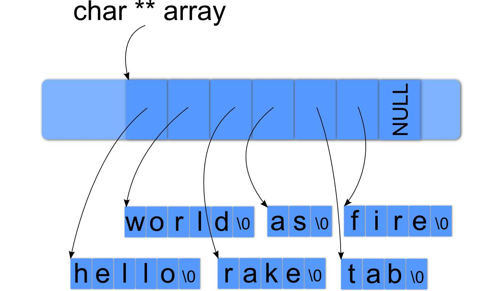

Learning Objectives#
The learning objectives for Extreme Edge Cases are:
- Test Driven Development
- Thinking of Edge Cases
- String Manipulation
- C Programming
Backstory#
What makes code good? Is it camelCased strings? Good comments? Descriptive variable names, perhaps?
One thing we know is that good code is generally modular - it consists of discrete “units” of functionality that are only responsible for very specific and certain behavior. In our case, working with C, these “units” are functions.
For example, the C string function strlen is solely responsible for determining the length of a string; it doesn’t do any I/O or networking, or anything else. A function that knows all and tries to do all would be bad design, and testing whether that kind of function adheres to expectations would be nontrivial.
A programmer might ask, “do my units of work behave the way I expect?” or “if my function expects a string, how does it behave when given NULL?”. These are crucial questions, since ensuring that units of code work exactly the way one would expect makes it easy to build reliable and robust software. An unreliable unit in a large system can affect the entire system significantly. Imagine if strcpy, for example, did not behave properly on all inputs; all of the higher-level units that use strcpy, and all of the units that interact with those units, would in-turn have unpredictable behavior, and so the unreliability would propagate through the whole system.
Enter unit testing.
Unit Testing#
Unit testing is a ubiquitous and crucial software development method used heavily in industry. According to artofunittesting.com, “a unit test is an automated piece of code that invokes a unit of work in the system and then checks a single assumption about the behavior of that unit of work”. This sounds like testing - leave it to the QAs, right? Actually, developers, much to their chagrin, are expected to write their own unit tests.
In order to write effective unit tests, all possible cases of input to a unit (mainly functions, in C), including edge cases, should be tested. Good unit tests test (extreme) edge cases, making sure that the discrete unit of functionality performs as specified with unexpected inputs.
In this MP, your goal is to create and test the behavior of an arbitrary string manipulation function to determine if it is reliable, predictable, and correct. While writing your functions, try to write modular code, as this will make your life easier when you test it. You’ll learn how to write effective test cases - an incredibly helpful skill for the rest of the course. Finally, you’ll be able to take these skills to Facenovel for your next internship and impress your coworkers.
Camel Caser#
We have chosen
char **camel_caser(const char* input)
as your arbitrary string manipulation function.
Your manager at Facenovel, to celebrate Hump Day, has asked all of the interns to implement a brand new camelCaser to convert sentences into camelCase. To give you a chance to earn your return offer, he also assigned you to write test cases for all the other interns’ implementations of camelCaser, with the implementations hidden from you.
Let’s say I want to get a sequence of sentences in camelCase. This is the string passed into your method:
"The Heisenbug is an incredible creature. Facenovel servers get their power from its indeterminism. Code smell can be ignored with INCREDIBLE use of air freshener. God objects are the new religion."
Your method should return the following:
["theHeisenbugIsAnIncredibleCreature",
"facenovelServersGetTheirPowerFromItsIndeterminism",
"codeSmellCanBeIgnoredWithIncredibleUseOfAirFreshener",
"godObjectsAreTheNewReligion",
NULL]
The brackets denote that the above is an array of those strings.
Here is a formal description of how your camelCaser should behave:
- You can’t camelCase a NULL pointer, so if
inputis a NULL pointer, return a NULL pointer. - If
inputis NOT NULL, then it is a NULL-terminated array of characters (a standard C string). - A input sentence,
input_s, is defined as any MAXIMAL substring of the input string that ends with a punctuation mark. This means that all strings in the camel cased output should not contain punctutation marks.- This means that “Hello.World.” gets split into 2 sentences “Hello” and “World” and NOT “Hello.World”.
- Let the camelCasing of
input_sbe calledoutput_s -
output_sis the the concatenation of all wordswininput_safterwhas been camelcased- The punctuation from
input_sis not added tooutput_s.
- The punctuation from
- Words are:
- delimited by the MAXIMAL amount of whitespace.
- This means that “hello world” is split into “hello” and world” and NOT “hello “, “ “, “ world” or any other combination of whitespaces
- considered uppercased if all of its letters are uppercased.
- considered lowercased if all of its letters are lowercased.
- delimited by the MAXIMAL amount of whitespace.
- a word
wis camelCased if and only if:- it is the first word and it is lowercased
- it is any word after the first word and its first letter is uppercased
- Punctuation marks, whitespace, and letters are defined by
ispunct(),isspace(), andisalpha()respectively.- These are parts of the C standard, so you can
man ispunctfor more information. - If
input_shas ANY non-{punctuation, letter, whitespace} characters, they go straight intooutput_swithout any modifications. ALL ASCII characters are valid input. Your camelCaser does not need to handle all of Unicode.
- These are parts of the C standard, so you can
-
camel_caserreturns an array ofoutput_sfor everyinput_sin the input string, terminated by a NULL pointer.
Hint: ctype.h has a lot of useful functions for this.
Your implementation goes in camelCaser.c, and you may not leak any memory.
We have also included a reference implementation. It is there to help you answer questions like, “What should be the result of inputting <blah> into camel_caser()?” You can start the program with ./camelCaser-reference and the program will take your input and return it camelCased when you press Enter. You should not add quotes around the strings you test (unless you want to try camelCasing actual quotation marks).
Destroy
You must also implement destroy(char **result), a function that takes in the output of your camel_caser and frees up any memory used by it. We will be calling this in our test cases and checking for memory leaks in your implementation, so remember to test this!
Camel Caser Result In Memory
camelCaser takes in a C string, which represents an arbitrary number of sentences, and returns a pointer to a NULL-terminated array of C strings where each sentence has been camelCased. It is up to you how the resulting structure is allocated, but it must be completely deallocated by your destroy function.
For those who like pictures, here is what the return value of camelCaser looks like in memory:

In the above picture, you can see that we have a char double pointer called ‘array’. In this scenario, the char double pointer points to the beginning of a NULL-terminated array of character pointers. Each of the character pointers in the array points to the beginning of a NULL-terminated char array that can be anywhere in memory.
These arrays are NULL-terminated because your user will need to know when these arrays end so they do not start reading garbage values. This means that array[0] will return a character pointer. Dereferencing that character pointer gets you an actual character. For demonstration purposes, here is how to grab the character “s” in “as”:
Copy// Take array and move it over by 3 times the size of a char pointer.
char **ptr = array + 3;
// Deference ptr to get back a character pointer pointing to the beginning of "as".
char *as = *ptr;
// Take that pointer and move it over by 1 times the size of a char.
char *ptr2 = as + 1;
// Now dereference that to get an actual char.
char s = *ptr2;
Escape Sequences
If you want to see how the reference implementation handles ASCII characters that cannot be typed directly, you can use escape sequences. You are likely already familiar with the \n escape sequence for representing newlines in printf, but there are many others available.
For example, you can see that newlines are treated as whitespace:
> hello\nworld.
{
"helloWorld",
NULL
}
Be warned: in the reference, if you type \n, the reference sees it as two bytes (\ and n), and will replace it with the ASCII line feed character (ASCII value 0x0A) before checking what type of character it is (punctuation, whitespace, alphanumeric, etc).
You should not do this in your implementation.
The reference does this so that you can test different escape sequences and how they should behave.
If you want to test escape characters in your camel caser, you can simply do camel_case("foo\tbar") in your test function(s). The C compiler will correctly compile the \t into the ASCII tab character rather than a \ followed by a t. To your camel caser, the \t will appear as one character, and will be correctly identified as whitespace by isspace('\t').
In conclusion: you should not parse escape sequences yourself by putting together \ and t; they will appear as one character to your camel caser.
Writing Unit Tests#
Your goal is to show that the other interns’ implementations of camelCaser - which, of course, you can’t see directly - fail on some extreme test cases, and, in the meantime, demonstrate to the head honcho at Facenovel exactly how robust your own function is.
Facenovel promises to pass in C-strings. Likewise, you promise to return a dynamically allocated NULL-terminated array of strings that can be deallocated with your destroy function.
What kinds of edge cases might come up?
Run make camelCaser to test. You will have to fill in tests in camelCaser_tests.c.
Because Facenovel values their testing server time, you may not try more than 16 different inputs, and each input must be less than 256 characters (only characters). This does NOT mean your implementation can assume input of 256 characters or less.
Also, it is not in the spirit of unit testing to diff your implementation with the one you are testing. Therefore, you may NOT call your own camel_caser function when implementing your test cases.
Other helpful resources: Test-Driven Development
Grading#
Grading is split up into two parts.
Your Implementation
The first portion of the test cases test your implementation of camel_caser. We pass in some input, and check that your output matches the expectations laid out in this document. Essentially, your code is put up against our unit tests, which means you can write as-good (or even better) unit tests to ensure that your camel_caser passes ours.
Your Unit Tests
The second portion of the test cases test your unit tests. We have a handful of camel_caser implementations, some that work, and some that don’t. To test your unit tests, we feed each of our camel_caser implementations through your test_camelCaser function (found in camelCaser_tests.c) and see if it correctly identifies its validity.
For each of the camel_caser implementations that you correctly identify - marking a good one as good, or a bad one as bad - you get a point. To prevent guessing, randomization, or marking them all the same, any incorrect identification loses you a point. However, after each autograde run, we will tell you how many good ones you correctly identified and how many bad ones you identified, so you know which unit tests may need improvement.
If your unit test segfaults or otherwise crashes, our test will interpret that as evaluating that implementation as a bad one.
You cannot assume anything about the input, other than the input string being NULL-terminated, just like all good strings in C.
Example
Let’s say there are five good implementations and five bad implementations. If you correctly say all five good are good, then you’d get +5 points. If you correctly identify three of the bad ones as bad, then you would get +3 for those and -2 for incorrectly labeling the others. In this case, you’d get a 6/10.
Good luck!
Submission Instructions#
Please read details on Academic Integrity fully. These are shared by all assignments in CS 241.
We will be using GitHub as our hand-in system this semester. Our grading system will checkout your most recent (pre-deadline) commit for grading. Therefore, to hand in your code, all you have to do is commit and push to your Github repository.
To check out the provided code for extreme_edge_cases from the class repository, go to your cs241 directory (the one you checked out for “know your tools”) and run:
git pull release master
If you run ls you will now see a extreme_edge_cases folder, where you can find this assignment! To commit your changes (send them to us), type:
git add extreme_edge_cases
git commit -m "extreme_edge_cases submission"
git push origin master
Your repository directory can be viewed from a web browser from the following URL: https://github-dev.cs.illinois.edu/cs241-fa18/NETID/tree/master/extreme_edge_cases where NETID is your University NetID. It is important to check that the files you expect to be graded are present and up to date in your remote git copy.
Assignment Feedback#
We strive to provide the best assignments that we can for this course, and we would like your feedback on them!
This is the form we will use to evaluate our assignments. We appreciate the time you take to give us your honest feedback and we promise to keep improving the course to make your experience in CS 241 the best it can be.